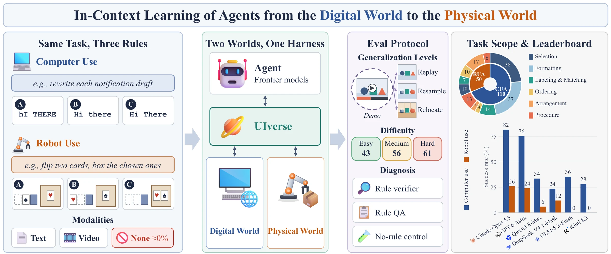
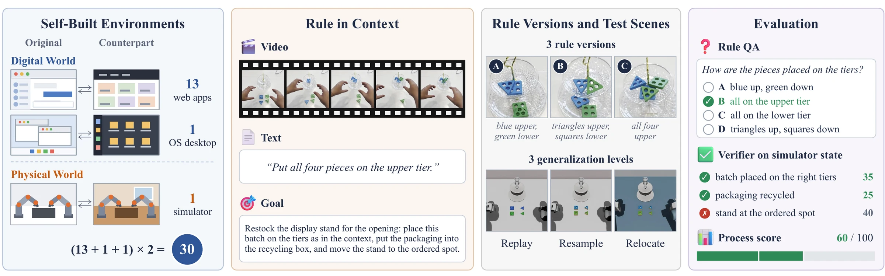
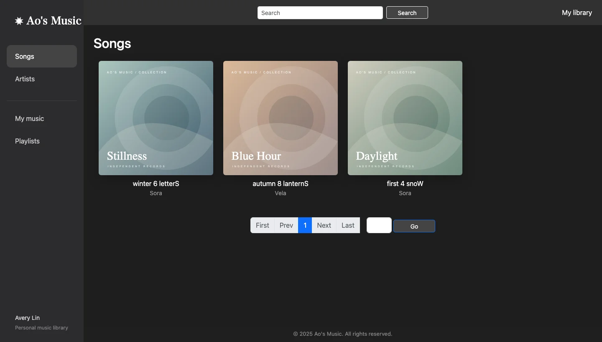
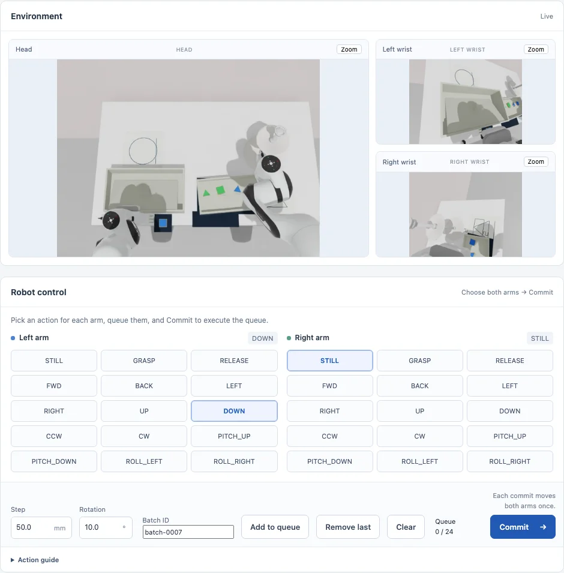

Benchmarking In-Context Learning of Agents
from Digital to Physical Worlds
Tsinghua University † Corresponding author

Every task has three rule versions that demand different behavior for the same goal. The rule is shown as a video, stated as text, or withheld.
The same agent operates web and desktop apps and a dual-arm robot, all through UIverse.
Three difficulty levels, three generalization levels (3R), rule verifiers, rule questions and a no-rule control.
160 tasks over six rule types, and the success of six frontier agents.
Frontier agents now operate both computers and robots. Can they learn a new rule from context — a demonstration video or a text instruction — and follow it?
ICLWorld is an online benchmark of 160 tasks across computer use and robot use, built on 30 self-built environments and 630 demonstration videos. Every task has three rule versions for the same goal and is tested at three levels — Replay, Resample, Relocate — through UIverse, one harness for both worlds.
The best agents follow in-context rules on screens but largely fail with a robot, and often identify the rule correctly yet fail to act on it.
In-context learning (ICL) lets agents acquire new rules from context and adapt to user-specific requirements at inference time. The same frontier agents now operate both computers and robots, yet their ICL remains insufficiently assessed: existing benchmarks are largely offline, rely on text or static images, and risk training-data contamination, while robot evaluations are limited to method-level ablations. We present ICLWorld, an online benchmark that evaluates the ICL of agents from digital to physical worlds, covering computer use and robot use, together with UIverse, a unified harness that turns every environment into a user interface. We build 30 environments, record 630 demonstration videos (10+ hours), and design 160 tasks with customized, often counter-intuitive rules that cannot be satisfied without learning from the context. Each task comes with three rule versions, given as text or video, and we test generalization at three levels, from replaying the demonstration to new instances and unseen environments. Across six frontier models, the strongest agents, Claude Opus 5.5 and GPT-6 Astra, succeed on 82% and 76% of computer-use runs but only 27% and 26% of robot-use runs, and a no-rule control reduces success to at most 8%. GPT-6 Astra succeeds under all three rule versions on only 38% of computer-use tasks, half its rate under a single rule, and answers 98% of robot rule questions correctly yet completes only 20% of these tasks. Frontier agents learn rules comparably well from video and from text and transfer them across environments, whereas weaker agents rely on text and lose most of their video-based success once the demonstrated situation is resampled. These findings reveal substantial gaps between the digital and the physical world and between identifying a rule and acting on it.
Users teach agents their own conventions by showing or telling. ICLWorld tests whether agents pick up such a rule from context and apply it, end to end, on a computer and with a robot.
Existing ICL benchmarks are mostly offline, with text or static images. Here agents learn from videos and text, then act in live environments.
All 30 environments, every rule and all 630 demonstrations are built and recorded by us.
Three rule versions per task demand different behavior in the same situation. Without the rule, success drops to at most 8%.
The same agents act on computers and robots through one harness, UIverse.
Each of the 15 original environments has a counterpart with the same function but a different look. The rule comes as a human demonstration or as text, the test scene follows one of the 3R levels, and a verifier checks the final state against the rule.

The agent acts through the same kind of graphical interface in both worlds: on-screen inputs for apps, and an arm control panel for the robot.


@article{liu2026iclworld,
title = {ICLWorld: Benchmarking In-Context Learning of Agents
from Digital to Physical Worlds},
author = {Liu, Qingle and Li, Jieming and Li, Pei-lin and Zheng, Shenghan and
Yang, Ruize and Fan, Sunqi and Hong, Deyao and Gao, Huan-ang and
Guo, Meng-Hao and Yang, Shuojin},
journal = {arXiv preprint},
year = {2026}
}